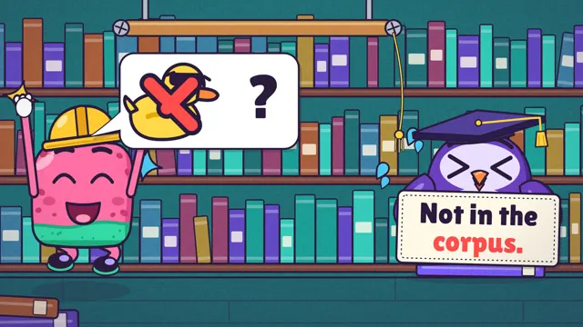
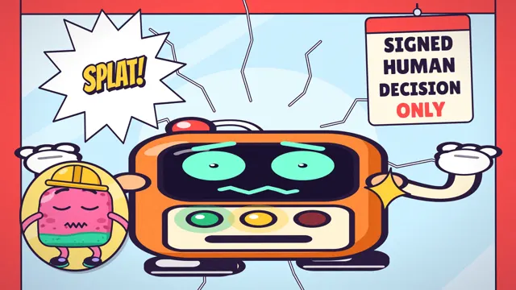
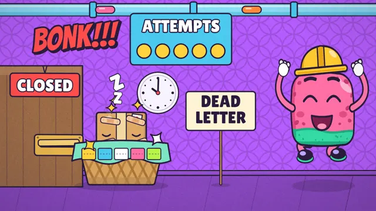
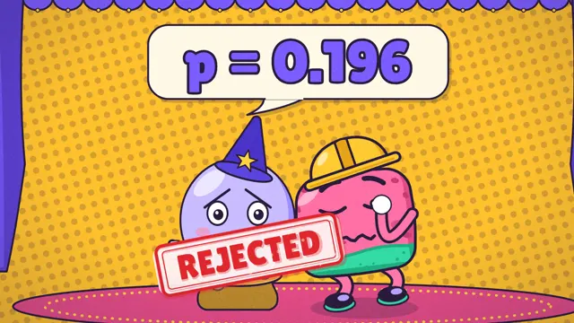
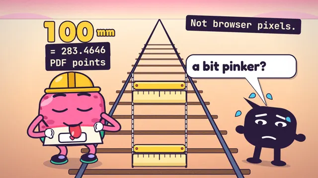
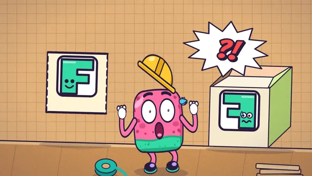
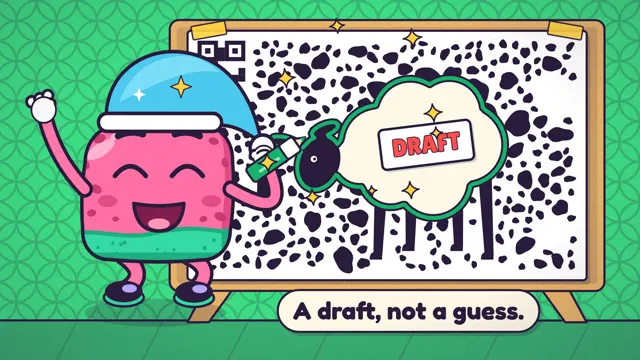
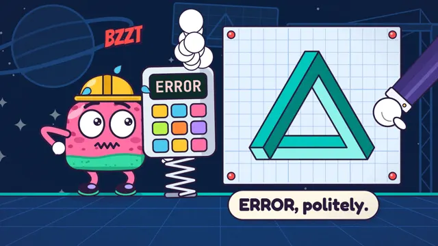

Mohamed Mahmoud Picturesاستوديو محمد محمودOriginal cartoonكرتون أصلي
Pop & Ship
A 90-second cartoon about eight real projects. Pop, an original pink sponge in a yellow hard hat, ships them one by one, and every episode fools your eyes with a real optical illusion before it shows you the proof. Scroll to play it four times slower, about six minutes at a steady pace, or press play with sound for the normal speed.كرتون مدته ٩٠ ثانية عن ثمانية مشاريع حقيقية. «بوب»، إسفنجة وردية أصلية بخوذة صفراء، يسلّمها واحداً تلو الآخر، وفي كل حلقة تخدع عينيك خدعة بصرية حقيقية قبل أن تُعرض الأدلة. مرّر لتشغّله أبطأ بأربع مرات، نحو ست دقائق بوتيرة ثابتة، أو اضغط التشغيل بالصوت للسرعة العادية.
Scroll slowly ↓ the film plays at your paceمرّر ببطء ↓ الفيلم يسير بإيقاعك
90 secondsثانية 8 episodesحلقات 8 optical illusionsخدع بصرية English · 60 fps with sound · slow mode 240 fpsبالإنجليزية · ٦٠ إطاراً مع الصوت · الوضع البطيء ٢٤٠ إطاراً
The eight episodesالحلقات الثماني
Each episode is one project from the site, one illusion, and one number the project can show.كل حلقة هي مشروع من الموقع، وخدعة بصرية، ورقم واحد يستطيع المشروع إثباته.

S01E01Show Your Work
ask-reposask-repos · Müller-Lyer linesخطوط مولر-لاير
answers with a citationإجابات بمصدر169/169
S01E02Sign Here
AI Automation TemplatesAI Automation Templates · scintillating gridالشبكة المتلألئة
checks passingفحوصات ناجحة61/61
S01E03No Event Left Behind
RelayOpsRelayOps · lilac chaserمطارد الليلك
testsاختبارات121
S01E04Losers Get Leaderboards Too
PetPoint Ops HubPetPoint Ops Hub · Ebbinghaus circlesدوائر إبنغهاوس
the rejected modelالنموذج المرفوضp = 0.196
S01E05Mind the Millimetre
Cake StudioCake Studio · Ponzo railwayسكة بونزو
testsاختبارات588
S01E06One Box, One Face
Box StudioBox Studio · Necker cubeمكعب نيكر
orientation checksفحوصات الاتجاه39/39
S01E07Counting Sheep, Legally
Sheep Business ManagementSheep Business Management · the hidden sheepالخروف المخفي
measured tasksمهام مقيسة18/18
S01E08Some Assembly Required
Spaceframe WorldSpaceframe World · Penrose triangleمثلث بنروز
tests at releaseاختبارات عند الإصدار325
Pop is an original character. Every number in the film comes from the same project data this site is built on. The builds are AI-assisted: specified, reviewed and verified by Mohamed. The picture is made in code and the sound is synthesised, so there are no third-party clips or music.«بوب» شخصية أصلية. كل رقم في الفيلم مأخوذ من بيانات المشاريع نفسها التي بُني عليها هذا الموقع. المشاريع مبنية بمساعدة الذكاء الاصطناعي: حدّدها وراجعها وتحقّق منها محمد. الصورة مصنوعة بالكود والصوت مُركَّب، فلا مقاطع ولا موسيقى من طرف ثالث.
◂ Back to The Worlds◂ العودة إلى العوالم